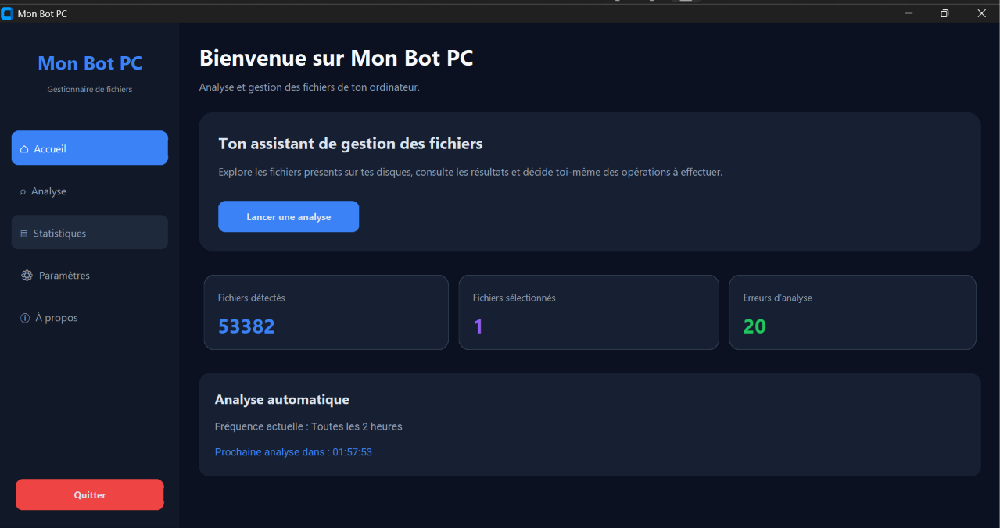

Analyse des fichiers
Parcourez les fichiers détectés sur les lecteurs accessibles et consultez leur nom, leur taille et leur chemin.
Mon Bot PC est un outil de bureau qui permet d'analyser les fichiers accessibles de votre ordinateur, de les consulter dans une interface et de choisir ceux que vous souhaitez envoyer vers la Corbeille Windows.
Version publique disponible gratuitement.

Capture d'écran réelle de Mon Bot PC.
Les fonctions principales de Mon Bot PC sont accessibles depuis une interface de bureau.
Parcourez les fichiers détectés sur les lecteurs accessibles et consultez leur nom, leur taille et leur chemin.
Choisissez une analyse manuelle ou un intervalle automatique de 30 minutes à 24 heures.
Sélectionnez les fichiers affichés et demandez leur envoi vers la Corbeille Windows après confirmation.
La fréquence choisie est enregistrée pour être retrouvée lors des prochaines ouvertures du programme.
Lancez une analyse, consultez les résultats et revenez au menu principal quand vous avez terminé.
Des dossiers et extensions sensibles sont exclus de l'analyse selon les règles intégrées au programme.
Voici les étapes générales d'utilisation du programme.
Ouvrez Mon Bot PC et choisissez de lancer une analyse ou de modifier la fréquence des cycles.
Examinez les noms, les tailles et les chemins des fichiers affichés.
Si nécessaire, sélectionnez les fichiers voulus et confirmez leur envoi vers la Corbeille.
Utilisez le programme avec prudence et vérifiez toujours les éléments affichés.
L'analyse peut afficher des documents personnels. Ne sélectionnez pas un fichier si vous ne savez pas à quoi il sert.
Le programme exclut certains dossiers et types de fichiers, mais cela ne garantit pas que tous les fichiers importants seront reconnus.
Un fichier peut ne pas pouvoir être restauré dans certaines situations. Conservez une copie de vos données importantes avant toute opération.
Mon Bot PC ne doit pas être considéré comme un outil de détection de virus, de réparation de Windows ou de récupération de données.
Découvrez la première version publique de Mon Bot PC pour Windows. Téléchargez le programme et lancez-le sur votre ordinateur.
Télécharger Mon Bot PCWindows · Version 2.0.0 · Téléchargement gratuit
Lors du téléchargement ou du premier lancement de Mon Bot PC, Windows peut afficher un message tel que « Windows a protégé votre ordinateur ».
Cela peut arriver parce que le programme est récent et que sa réputation auprès de Microsoft n'est pas encore établie. Cet avertissement ne signifie pas automatiquement que le programme est dangereux, mais il ne garantit pas non plus qu'il est sans risque.
Avant de lancer le programme :
Mon Bot PC n'est pas un antivirus. Vérifiez toujours les fichiers avant de confirmer leur suppression.
Important : vérifiez les fichiers avant toute suppression. Ce programme n'est pas un antivirus. Les protections intégrées ne sont pas infaillibles.